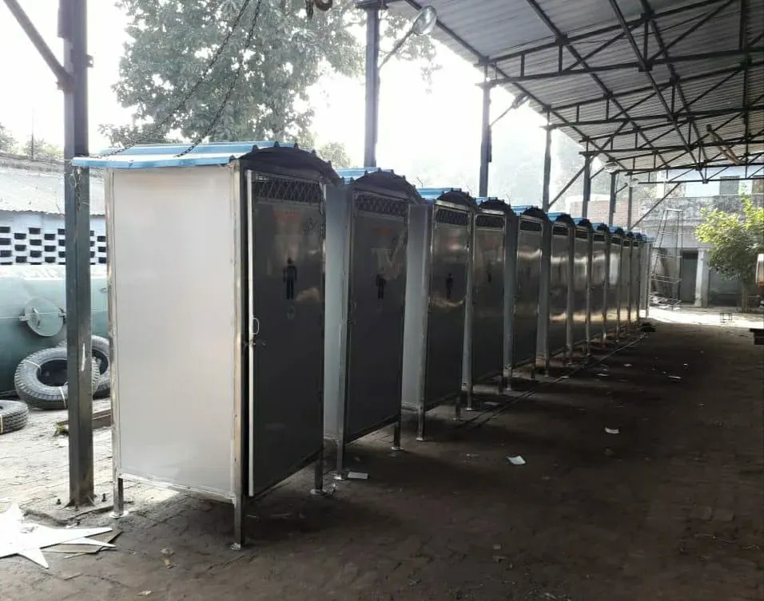

THE MANUFACTURER / UNNAO, INDIA
From the workshop
to the field.
Globe International manufactures and supplies equipment for municipal sanitation, material handling and agricultural transport.
Explore our workshop
01 / MANUFACTURING SHOWCASE
Equipment on the shop floor



02 / EQUIPMENT RANGE
Find equipment by application
Browse the range for waste collection, cleaning, transport and public sanitation.